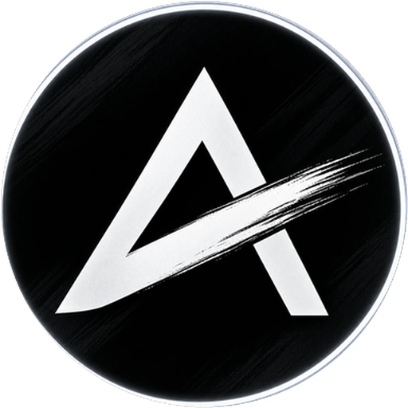

<!doctype html>
<html lang="id">
<head>
<meta charset="utf-8">
<meta name="viewport" content="width=device-width, initial-scale=1">
<title>Splash Bergerak</title>
<link rel="preconnect" href="https://fonts.googleapis.com">
<link rel="preconnect" href="https://fonts.gstatic.com" crossorigin>
<link href="https://fonts.googleapis.com/css2?family=Inter:wght@400;500;600;700&family=JetBrains+Mono:wght@500;700&display=swap" rel="stylesheet">
<style>
/* Pratinjau konsep splash. Geraknya fungsi murni dari waktu t (render(t)),
   supaya bisa dipotret frame demi frame dan diputar ulang sama persis.
   Di app nanti: Reanimated + react-native-svg — yang dipakai di sini cuma
   transform, opacity, dan satu garis SVG, semuanya ada padanannya di RN. */
:root{ --bg:#080706; --text:#F4F1EB; --muted:#BDB5A9; --samar:#8C8479; --amber:#E5AD51; --mono:'JetBrains Mono',monospace; }
*{box-sizing:border-box;margin:0;padding:0}
body{background:#050403;font-family:Inter,system-ui,sans-serif;color:var(--text);-webkit-font-smoothing:antialiased;padding:40px}
.deret{display:flex;gap:56px;padding:48px 56px;border-radius:28px;width:max-content;
  background:radial-gradient(1200px 600px at 50% -10%,rgba(76,51,27,.5),rgba(8,7,6,0) 75%),#080706;box-shadow:inset 0 0 0 1px #1d1914}
.sel{display:flex;flex-direction:column;gap:18px;width:410px;align-items:center}
.cap{width:390px}
.cap small{font-family:var(--mono);font-size:11px;letter-spacing:.2em;color:var(--amber)}
.cap b{display:block;font-size:18px;font-weight:600;margin-top:6px;letter-spacing:-.015em}
.cap p{font-size:13px;color:var(--samar);line-height:1.5;margin-top:6px}
.hp{width:390px;height:844px;border-radius:54px;position:relative;overflow:hidden;background:var(--bg);flex:none;
  box-shadow:0 0 0 1.5px #2b251e,0 0 0 9px #0d0b09,0 0 0 10.5px #3b332a,0 60px 120px -40px rgba(0,0,0,.95)}
.lap{position:absolute;inset:0}
.glow{position:absolute;left:-65px;top:162px;width:520px;height:520px;border-radius:50%;
  background:radial-gradient(circle,#5a3c1e 0%,#3a2915 26%,#1c140b 52%,rgba(8,7,6,0) 72%);opacity:0;will-change:transform,opacity}
.logo{position:absolute;left:135px;top:362px;width:120px;height:120px;will-change:transform,opacity}
.logo img{position:absolute;inset:0;width:120px;height:120px;border-radius:50%}
.klip{position:absolute;inset:0;border-radius:50%;overflow:hidden}
.redup{position:absolute;inset:0;background:#000;opacity:0}
.bingkai-sapuan{position:absolute;left:-60px;top:-60px;width:240px;height:240px;transform:rotate(-27deg)}
.kilau{position:absolute;top:0;left:120px;width:30px;height:240px;margin-left:-15px;mix-blend-mode:screen;opacity:0;
  background:linear-gradient(90deg,rgba(255,236,200,0),rgba(255,226,170,.55) 50%,rgba(255,236,200,0))}
.tutup{position:absolute;top:0;left:0;width:300px;height:240px;
  background:linear-gradient(90deg,rgba(0,0,0,0),rgba(0,0,0,.84) 18px,rgba(0,0,0,.84))}
.ujung{position:absolute;width:16px;height:16px;margin:-8px 0 0 -8px;border-radius:50%;opacity:0;
  background:radial-gradient(circle,#FFF3D6 0%,#F0BF6B 35%,rgba(229,173,81,0) 70%)}
.percik{position:absolute;width:4px;height:4px;margin:-2px 0 0 -2px;border-radius:50%;background:#F0BF6B;opacity:0;box-shadow:0 0 6px #E5AD51}
.cincin{position:absolute;left:-10px;top:-10px;width:140px;height:140px;overflow:visible}
.denyut{position:absolute;inset:-4px;border-radius:50%;box-shadow:0 0 0 1.5px #E5AD51;opacity:0}
.merek{position:absolute;left:0;right:0;top:512px;text-align:center;font-size:28px;font-weight:700;letter-spacing:-.025em;white-space:nowrap}
.merek span{display:inline-block;opacity:0;will-change:transform,opacity}
.merek span.m{color:var(--amber)}
.tagline{position:absolute;left:0;right:0;top:556px;text-align:center;font-size:14px;color:var(--muted);opacity:0;letter-spacing:-.005em}
.tujuan{position:absolute;inset:0;width:390px;height:844px;opacity:0;will-change:transform,opacity}
.garis{position:absolute;inset:0;overflow:visible}
.jam{position:absolute;right:24px;top:22px;font-family:var(--mono);font-size:10px;color:rgba(255,255,255,.28);letter-spacing:.08em;z-index:9}
</style>
</head>
<body>
<div class="deret" id="deret"></div>
<script src="../polish-2026/data.js"></script>
<script>
'use strict';
/* ── kurva: token yang sama dengan src/gaya/gerak.ts / skill animate-expo ── */
function bez(x1, y1, x2, y2) {
  const cx = 3 * x1, bx = 3 * (x2 - x1) - cx, ax = 1 - cx - bx, cy = 3 * y1, by = 3 * (y2 - y1) - cy, ay = 1 - cy - by;
  const sx = (t) => ((ax * t + bx) * t + cx) * t, sy = (t) => ((ay * t + by) * t + cy) * t, dsx = (t) => (3 * ax * t + 2 * bx) * t + cx;
  return (x) => { if (x <= 0) return 0; if (x >= 1) return 1; let t = x; for (let i = 0; i < 10; i++) { const d = sx(t) - x; if (Math.abs(d) < 1e-6) break; const dd = dsx(t); if (Math.abs(dd) < 1e-6) break; t -= d / dd; } return sy(Math.min(1, Math.max(0, t))); };
}
const KELUAR = bez(0.23, 1, 0.32, 1);      // ease-out kuat
const PINDAH = bez(0.77, 0, 0.175, 1);     // ease-in-out
const LINIER = (x) => x;
const seg = (t, a, b, e = KELUAR) => e(Math.min(1, Math.max(0, (t - a) / (b - a))));
const lerp = (a, b, k) => a + (b - a) * k;

/* geometri logo (diukur dari splash-icon.png): cakram 75 dp di splash native,
   sapuan kuas miring −27°, di bingkai-sapuan ia garis datar y=+10, x −20…+54 */
const PUSAT = { x: 195, y: 422 };
const BASIS = 120;
const S_NATIVE = 75 / BASIS;
const SAP = { y: 10, x0: -20, x1: 54 };

/* harga asli untuk garis konsep C: 40 tutup lilin BTCUSDT h1 terakhir */
const TUTUP = (window.DATA?.bacaan?.['BTCUSDT|h1']?.lilin ?? []).slice(-40).map((l) => l[4]);

const KONSEP = [
  { id: 'A', no: 'A · TIAP BUKA APP', nama: 'Kilau', dur: 1700, tujuan: '../polish-2026/png/semua/hp-03-home.png',
    ket: '≤ 0,7 detik. Cahaya amber mekar di belakang logo, kilau menyapu searah sapuan kuas, lalu Home naik. Kalau gerbang sesi masih menunggu, cahayanya bernapas pelan sampai siap.' },
  { id: 'B', no: 'B · PEMASANGAN PERTAMA', nama: 'Sapuan kuas', dur: 3000, tujuan: '../polish-2026/png/semua/hp-01-masuk.png',
    ket: '± 2 detik, sekali seumur pemasangan. Logo meredup, lalu sapuan kuasnya dilukis ulang dengan percikan amber di ujung kuas; nama dan tagline menyusul, lalu layar masuk.' },
  { id: 'C', no: 'C · PEMASANGAN PERTAMA', nama: 'Garis harga jadi logo', dur: 3000, tujuan: '../polish-2026/png/semua/hp-01-masuk.png',
    ket: '± 2 detik. Garis dari 40 harga BTCUSDT h1 yang asli menjalar dari tepi layar dan berakhir tepat di pangkal sapuan kuas — garis chart menjadi logonya.' },
];

const PERCIK = Array.from({ length: 9 }, (_, i) => ({ t: 560 + i * 52, sudut: (-150 + (i * 47) % 120) * Math.PI / 180, jarak: 14 + (i * 13) % 22 }));

function bangun(k) {
  const huruf = 'AnalisMarket'.split('').map((c, i) => `<span class="${i >= 6 ? 'm' : ''}">${c}</span>`).join('');
  return `<div class="sel"><div class="hp" id="hp-${k.id}">
    <div class="lap" style="background:var(--bg)"></div>
    <div class="glow"></div>
    ${k.id === 'C' ? '<svg class="garis" viewBox="0 0 390 844"><defs><linearGradient id="gg" x1="0" x2="1"><stop offset="0" stop-color="#E5AD51" stop-opacity="0"/><stop offset=".55" stop-color="#E5AD51" stop-opacity=".75"/><stop offset="1" stop-color="#F6D392"/></linearGradient></defs><path class="g-lebar" fill="none" stroke="#E5AD51" stroke-opacity=".18" stroke-width="7" stroke-linecap="round" stroke-linejoin="round"/><path class="g-inti" fill="none" stroke="url(#gg)" stroke-width="2.2" stroke-linecap="round" stroke-linejoin="round"/><circle class="g-kepala" r="4" fill="#FFF3D6"/><circle class="g-halo" r="11" fill="#E5AD51" opacity=".25"/></svg>' : ''}
    <div class="logo">
      <div class="denyut"></div>
      
      <div class="klip"><div class="redup"></div><div class="bingkai-sapuan">${k.id === 'B' ? '<div class="tutup"></div>' : ''}<div class="kilau"></div></div></div>
      <div class="bingkai-sapuan">${k.id === 'B' ? '<div class="ujung"></div>' + PERCIK.map(() => '<div class="percik"></div>').join('') : ''}</div>
      ${k.id !== 'A' ? '<svg class="cincin" viewBox="0 0 140 140"><circle cx="70" cy="70" r="66" fill="none" stroke="#E5AD51" stroke-width="1.4" stroke-linecap="round" transform="rotate(-90 70 70)" stroke-dasharray="414.7" stroke-dashoffset="414.7"/></svg>' : ''}
    </div>
    ${k.id !== 'A' ? `<div class="merek">${huruf}</div><div class="tagline">Mesin membaca chart. Kamu yang memutuskan.</div>` : ''}
    
    <div class="jam"></div>
  </div><div class="cap"><small>${k.no}</small><b>${k.nama}</b><p>${k.ket}</p></div></div>`;
}
document.getElementById('deret').innerHTML = KONSEP.map(bangun).join('');

const $ = (id, s) => document.querySelector(`#hp-${id} ${s}`);
const $$ = (id, s) => [...document.querySelectorAll(`#hp-${id} ${s}`)];
function logo(id, s, dy = 0, op = 1) { const e = $(id, '.logo'); e.style.transform = `translateY(${dy}px) scale(${s})`; e.style.opacity = op; }
function glow(id, op, sk = 1, dy = 0) { const e = $(id, '.glow'); e.style.opacity = op; e.style.transform = `translateY(${dy}px) scale(${sk})`; }
function kilau(id, k, op) { const e = $(id, '.klip .kilau'); e.style.opacity = op; e.style.transform = `translateX(${lerp(-80, 80, k)}px)`; }
function tujuan(id, k) { const e = $(id, '.tujuan'); e.style.opacity = k; e.style.transform = `translateY(${lerp(16, 0, k)}px)`; }
function merek(id, t0, op = 1, dy = 0) {
  $$(id, '.merek span').forEach((s, i) => { const k = seg(t0, i * 26, i * 26 + 260); s.style.opacity = k * op; s.style.transform = `translateY(${lerp(8, 0, k) + dy}px)`; });
}
function cincin(id, k, op = 1) { const c = $(id, '.cincin circle'); if (!c) return; c.setAttribute('stroke-dashoffset', String(414.7 * (1 - k))); c.style.opacity = op; }

/* ── A · Kilau ───────────────────────────────────────────── */
function renderA(t) {
  const keluar = seg(t, 650, 900);
  glow('A', seg(t, 200, 520) * (1 - keluar), lerp(0.85, 1, seg(t, 200, 520)));
  logo('A', S_NATIVE * lerp(1, 0.92, keluar), 0, 1 - keluar);
  kilau('A', seg(t, 300, 650, PINDAH), seg(t, 300, 360, LINIER) * (1 - seg(t, 590, 650, LINIER)));
  tujuan('A', seg(t, 650, 950));
}

/* ── B · Sapuan kuas ─────────────────────────────────────── */
function renderB(t) {
  const besar = seg(t, 200, 500, PINDAH);
  const keluar = seg(t, 2200, 2550);
  const s = S_NATIVE * lerp(1, 108 / BASIS / S_NATIVE, besar) * lerp(1, 0.96, keluar);
  logo('B', s, lerp(0, -34, besar) - 10 * keluar, 1 - keluar);
  $('B', '.redup').style.opacity = 0;
  /* tutup: tepinya bergerak dari kiri ke kanan sepanjang arah sapuan */
  const lukis = seg(t, 450, 1100, PINDAH);
  const tepi = lerp(-75, 75, lukis);
  const tutup = $('B', '.tutup'); tutup.style.transform = `translateX(${120 + tepi - 9}px)`;
  tutup.style.opacity = t < 200 ? 0 : seg(t, 200, 420, LINIER);
  const ujung = $('B', '.ujung');
  const diSapuan = tepi >= SAP.x0 - 6 && tepi <= SAP.x1 + 6 && t < 1150;
  ujung.style.left = `${120 + tepi}px`; ujung.style.top = `${120 + SAP.y}px`; ujung.style.opacity = diSapuan ? 1 : 0;
  $$('B', '.percik').forEach((p, i) => {
    const d = PERCIK[i]; const k = seg(t, d.t, d.t + 340, KELUAR);
    const x0 = lerp(-75, 75, seg(d.t, 450, 1100, PINDAH));
    p.style.left = `${120 + x0 + Math.cos(d.sudut) * d.jarak * k}px`; p.style.top = `${120 + SAP.y + Math.sin(d.sudut) * d.jarak * k}px`;
    p.style.opacity = t < d.t ? 0 : (1 - k);
  });
  glow('B', seg(t, 950, 1400) * (1 - keluar), lerp(0.85, 1, seg(t, 950, 1400)), lerp(0, -34, besar));
  cincin('B', seg(t, 900, 1450, PINDAH), 1 - keluar);
  merek('B', t - 1150, 1 - keluar, -12 * keluar);
  const tg = $('B', '.tagline'); tg.style.opacity = seg(t, 1500, 1800) * (1 - keluar); tg.style.transform = `translateY(${lerp(6, 0, seg(t, 1500, 1800))}px)`;
  tujuan('B', seg(t, 2300, 2650));
}

/* ── C · Garis harga jadi logo ───────────────────────────── */
let jalurC = null;
function siapkanC() {
  /* ujung garis = pangkal sapuan kuas di layar, saat logo sudah 108 px dan naik 34 px */
  const s = 108 / BASIS; const cy = PUSAT.y - 34;
  const r = -27 * Math.PI / 180;
  const ke = (xf, yf) => ({ x: PUSAT.x + s * (xf * Math.cos(r) - yf * Math.sin(r)), y: cy + s * (xf * Math.sin(r) + yf * Math.cos(r)) });
  const pangkal = ke(SAP.x0, SAP.y);
  const vals = TUTUP.length > 5 ? TUTUP : Array.from({ length: 40 }, (_, i) => Math.sin(i / 5) * 10 + i);
  const mn = Math.min(...vals), mx = Math.max(...vals);
  const pts = vals.map((v, i) => ({ x: -6 + i / (vals.length - 1) * (pangkal.x + 6), y: 0, v }));
  /* skala tegak: titik terakhir tepat di pangkal, rentang ±80 px */
  const akhir = vals[vals.length - 1];
  pts.forEach((p) => { p.y = pangkal.y - (p.v - akhir) / ((mx - mn) || 1) * 160; });
  const d = pts.map((p, i) => (i ? 'L' : 'M') + p.x.toFixed(1) + ' ' + p.y.toFixed(1)).join(' ');
  const svg = $('C', '.garis');
  svg.querySelector('.g-lebar').setAttribute('d', d); svg.querySelector('.g-inti').setAttribute('d', d);
  const panjang = svg.querySelector('.g-inti').getTotalLength();
  jalurC = { svg, panjang, pts, ke };
}
function renderC(t) {
  if (!jalurC) siapkanC();
  const besar = seg(t, 200, 500, PINDAH);
  const keluar = seg(t, 2200, 2550);
  logo('C', S_NATIVE * lerp(1, 108 / BASIS / S_NATIVE, besar) * lerp(1, 0.96, keluar), lerp(0, -34, besar) - 10 * keluar, 1 - keluar);
  const tarik = seg(t, 450, 1250, PINDAH);
  const { svg, panjang } = jalurC;
  const pudar = 1 - seg(t, 1450, 1850, LINIER);
  for (const kls of ['.g-lebar', '.g-inti']) { const p = svg.querySelector(kls); p.setAttribute('stroke-dasharray', String(panjang)); p.setAttribute('stroke-dashoffset', String(panjang * (1 - tarik))); p.style.opacity = t < 450 ? 0 : pudar * (1 - keluar); }
  const pt = svg.querySelector('.g-inti').getPointAtLength(panjang * tarik);
  const tampakKepala = t > 450 && t < 1270 ? 1 : 0;
  for (const kls of ['.g-kepala', '.g-halo']) { const c = svg.querySelector(kls); c.setAttribute('cx', pt.x); c.setAttribute('cy', pt.y); c.style.opacity = tampakKepala * (kls === '.g-halo' ? 0.3 : 1); }
  kilau('C', seg(t, 1230, 1560, PINDAH), seg(t, 1230, 1280, LINIER) * (1 - seg(t, 1500, 1560, LINIER)));
  const dy = $('C', '.denyut'); const kd = seg(t, 1240, 1740); dy.style.opacity = t < 1240 ? 0 : 0.7 * (1 - kd); dy.style.transform = `scale(${lerp(1, 1.45, kd)})`;
  glow('C', seg(t, 1260, 1700) * (1 - keluar), lerp(0.85, 1, seg(t, 1260, 1700)), lerp(0, -34, besar));
  cincin('C', seg(t, 1300, 1800, PINDAH), 1 - keluar);
  merek('C', t - 1450, 1 - keluar, -12 * keluar);
  const tg = $('C', '.tagline'); tg.style.opacity = seg(t, 1750, 2000) * (1 - keluar); tg.style.transform = `translateY(${lerp(6, 0, seg(t, 1750, 2000))}px)`;
  tujuan('C', seg(t, 2300, 2650));
}

const RENDER = { A: renderA, B: renderB, C: renderC };
window.render = (t, hanya = null) => {
  for (const k of KONSEP) {
    if (hanya && hanya !== k.id) continue;
    const tk = Math.min(t, k.dur);
    RENDER[k.id](tk);
    $(k.id, '.jam').textContent = `${(tk / 1000).toFixed(2).replace('.', ',')} dtk`;
  }
};
window.KONSEP = KONSEP;
/* putar sendiri saat dibuka di peramban (bukan saat dipotret) */
if (!location.hash.includes('potret')) {
  const mulai = performance.now();
  const putar = () => { const t = (performance.now() - mulai) % 3600; window.render(t); requestAnimationFrame(putar); };
  document.fonts.ready.then(() => requestAnimationFrame(putar));
}
document.fonts.ready.then(() => { window.render(0); document.body.dataset.siap = '1'; });
</script>
</body>
</html>
